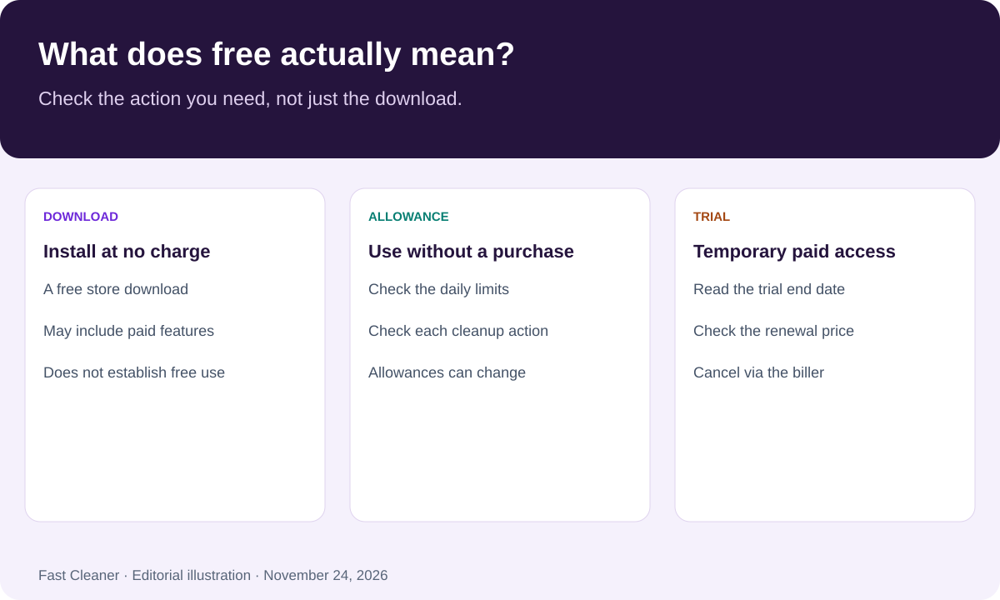
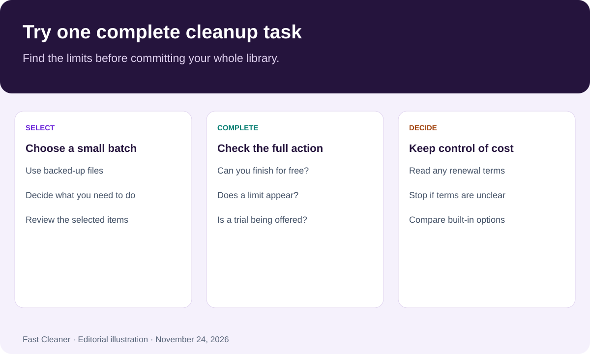

Which iPhone cleaner should you try for free?
Start with Apple Photos for identified duplicates and manual media review. If you want another interface, Clever Cleaner describes daily free allowances and an unlimited Swipe workflow in its current listing. Treat other free downloads as candidates to check, rather than proof of unlimited free cleanup.
The best free choice is one that lets you finish your particular task without a payment or trial you did not intend to start. This shortlist separates built-in tools, advertised ongoing free use, and downloads with unverified free limits.
Review scope: Fast Cleaner publishes this guide and develops one of the apps discussed. We reviewed published information on November 24, 2026; we have not tested these apps side by side. Free limits, purchase offers, and performance can vary by version and account.
Free download, free cleanup, and free trial are different
A store’s Free label can mean installation costs nothing. An ongoing free allowance lets you complete some actions without starting a purchase. A trial gives temporary access and may convert to a paid plan.
Before scanning your whole library, find the paywall or limits for the action you need: review, delete, compress, or merge. A scan that shows suggestions does not establish that removing those items is free.


A practical shortlist
| Option | What the source establishes | Before relying on it |
|---|---|---|
| Apple Photos | Built-in merging for duplicates it identifies | Review groups; separate similar shots yourself |
| Clever Cleaner | Developer describes free daily limits and Swipe without a daily limit | Check limits for each other action; paid upgrades exist |
| Fast Cleaner | Free download with optional purchases | Exact current free actions were not independently tested |
| Cleanup | Free download with optional purchases | Verify cleanup limits and trial terms |
| Cleaner Kit by BPMobile | Listing describes essential free tools and optional upgrades | Which actions and quantities are free need checking |
This is a starting order for evaluating cost, not a scan-accuracy ranking. The store listings were reviewed on November 24, 2026; offers and limits may change. Cleaner Guru is another free download with paid options, but a download alone is not enough evidence to recommend it as an unlimited free cleaner.
Apple Photos: start without another purchase
Open Photos and look for Duplicates under Utilities; menu placement varies by version. Review the groups and use Merge for copies you want to combine. Apple’s instructions describe this built-in workflow.
You can also review your photos and screenshots manually. This takes attention, but you keep direct control over the choice. Start with a small batch and preserve important originals independently of a synced library.
If the collection is missing, follow our duplicate-detection troubleshooting guide. A missing collection does not establish that you need to pay for an app.
Clever Cleaner: check ongoing allowances
The current Clever Cleaner listing describes free daily limits, says Swipe has no daily limit, and offers paid options. Older descriptions of entirely unlimited free use do not describe the current catalog accurately.
It may be worth trying if you prefer to review pictures one at a time or use its grouping interface. Check the limit for the specific tool you want before processing a large batch. A daily allowance can fit periodic small reviews without being suitable for a one-session archive cleanup.
How to evaluate the other free downloads
For Fast Cleaner, Cleanup, and Cleaner Kit, inspect what happens when you attempt the exact task you came for. Do you need a paid plan to remove a selection, compress a video, or repeat the action? Can you leave the trial screen and continue with an ongoing free feature?
If the answer is unclear, keep using built-in tools while you compare. There is no need to enter a trial just to discover its renewal amount. For the specific purchase models, read our Cleanup review and Cleaner Guru comparison.


Free does not answer the privacy question
Review permissions and data disclosures independently of price. Local photo processing and other analytics can coexist; neither a paid subscription nor a free interface establishes security.
Fast Cleaner’s policy describes on-device media analysis and separate limited analytics. Use our safety checklist to evaluate any candidate on the same basis.
Choose the smallest tool that solves the job
For identified duplicates, start with Photos. For a different review interface, try a clearly described ongoing free option on a small selection. If you need repeated large cleanups or another paid feature, compare the full purchase terms deliberately.
For video files you want to keep, Apple also documents a free iMovie export route. Our video-compression guide compares that route with dedicated cleanup tools.
Choose what to keep
Review the current iPhone features, privacy information, and purchase terms before installing.
Common questions
Is there a completely free iPhone cleanup option?
Apple Photos includes duplicate merging and manual photo review without a separate cleaner purchase. A third-party app may offer ongoing free actions, but verify current limits.
Is Clever Cleaner still free?
Its current listing describes daily free allowances and paid upgrades. It also says Swipe has no daily limit. Check the version and exact tool you intend to use.
Does a free trial mean I can clean for free forever?
No. A trial is temporary and can renew into a paid plan. Read the purchase terms before starting it.
Do I need an app to clear every storage category?
A media cleaner does not control every app’s private data. Check Settings, General, iPhone Storage and manage other categories in their own apps.
Sources and review method
Published sources checked November 24, 2026. Some store responses may be cached. Product descriptions and free-limit statements are attributed to developers; no scan accuracy, recovered-storage, or comparative security result is claimed. The linked product IDs keep similarly named apps separate.
Prices and eligibility can vary by storefront, account, and version. A current purchase screen is the place to confirm what you would buy. Illustrations summarize choices, not measured app results.